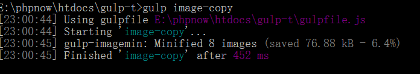

一、为什么要用Node环境：
js是一个脚本文件，不能直接用来操作文件
但是，在项目过程中，免不了需要经常操作一些文件，包括移动复制压缩上传修改等
如果重新学习C之类底层操作的语言的未免成本太高，此时node的横空出世，解决了这个问题
因为node使用了js的语法，而且使用js的人也越来越多，node就理所当然的火遍大江南北
在node中有很多插件，类似于手机中的软件，拿到一个新手机没有任何软件是没有办法使用的
gulp就是node中的工具之一
gulp是一种前端自动化工具，在使用gulp之前需要先安装gulp
安装gulp有两种方式，一种是通过下载软件安装，一种是通过类似手机的应用商店的软件下载，而node就是这个应用商店
直接在网页上下载安装不仅安全性无法保证，而且还会造成不兼容等问题；
通过手机的应用商店下载的软件会自动适配当前手机的型号和cpu等信息，既保证了安全，也保证的软件的功能完整性
二、配置nodejs
node是一个命令行工具，使用这个工具需要用到两个命令
npm install 安装软件
npm uninstall 卸载软件
1.需要注意的是node没有可视化界面操作，直接在命令行中进行操作
node -v 显示node的版本
2.gulp的全局环境类似于下载器，在使用gulp之前需要先安装环境
npm install gulp -g
下载完成之后执行
gulp -v
查看gulp的版本，安装完成
3.创建一个文件夹，起个任意名字，从命令行中进入当前文件夹
执行npm install gulp --save-dev
配置局部环境
下载完成后执行gulp -v
会出现全局和局部的版本号，一致为成功，不一致，删除重新安装局部
4.执行npm init
设置配置信息，可以全部为默认
三、开始使用gulp（原生gulp）
5.开始使用gulp
5.1. 实现功能将线下版本的文件放在线上版本中
1》在命令行中输入gulp，提示没有gulpfile文件，需要手动创建固定文件名gulpfile.js文件
在该文件中引入gulp模块，let gulp = require("gulp");
注意：因为node完美支持ES6，所以在node环境中可以使用ES6的所有语法
2》gulp为gulp模块返回的对象，在这个对象中，有一些方法
gulp.task("指令名字",()=>{指令执行函数}) 绑定指令的方法
gulp.task("index",()=>{
//gulp.src()//找到源文件的目录
//gulp.pipe()//在连缀之中继续调用gulp方法
//gulp.dest()//转存方法
//实现功能的时候，一定要用ruturn
return gulp.src("index.html").pipe(gulp.dest("dist"));
})
在gulp.src中可以接收数组，表示多个文件
文件名可以用*代替，表示通配
**/*表示多层文件夹嵌套
!文件路径，表示除了此文件
3》gulp.watch()监控
gulp.task("watch",()=>{
//监控index.html文件，如果发生改变，那么执行index指令
gulp.watch("index.html",["index"]);
})
5.2 gulp原生默认指令（default）：
default 为gulp自带默认指令，当在命令行中执行gulp后不跟任何指令名的时候，所执行的指令
gulp.task("default",["hello"]); //第二个参数为要执行的命令名，可以接受多个，表示默认执行的指令
四、gulp插件（服务器插件）创建本地服务
1.安装插件（插件只有局部，没有全局，所以要安装在项目文件夹中）
npm install gulp-connect
2.引入插件
在gulpfile文件中引用let connect = require("gulp-connect");
3.配置gulp-connect
gulp.task("server",()=>{
connect.server({
root:"dist", //以哪个文件夹为服务器
port:8888 //端口号
livereload:true //是否可以自动刷新
})
})
4.此时可以在浏览器中输入本地地址，访问服务器
如果要实现保存自动刷新功能，首先需要在index指令中调用connect插件
return gulp.src("index.html").pipe(gulp.dest("dist")).pipe(connect.reload());
其次需要同时运行服务器指令和监测指令，可通过默认指令实现
gulp.task("default",["server","watch"]);
表示先打开server，再打开watch，就可以进行实时监测，实现本地修改保存，服务器自动修改
配置nodejs
npm install -g cnpm --registry=https://registry.npm.taobao.org
如果使用cnpm 也就是淘宝镜像，直接把所有npm安装上就可以了；
五、扩展练习：
图片拷贝
我们可以通过刚刚学习的拷贝命令去拷贝其他项目中的文件， 包括项目中的图片
gulp.task("images",function(){
return gulp.src("images/*.jpg").pipe(gulp.dest("dist/images"))//*代表所有
})
拷贝多种文件及文件夹：
1.拷贝多种后缀名
gulp.src("images/*.{jpg,png}")
2.如果要拷贝文件夹下所有内容
gulp.src("images/*/*")
如果要拷贝所有的话， 可以使用 images/**/* 去表示当前images文件夹下所有的内容全部进行拷贝。
将两个文件夹拷贝到同一个目标文件夹下
将文件源叫做glub，那么这个时候我们拷贝两个及两个以上源的时候那，叫做多个源文件的拷贝。
gulp.src(['json/*.json','xml/*.xml']);
这样我们就可以对文件进行一个更改了
gulp.task('data',function(){
return gulp.src(['xml/*.list','json/*.json']).pipe(gulp.dest('dist/data'))
})
排除 ！
return gulp.src(['xml/*.xml','json/*.json','!json/secret.json']).pipe(gulp.dest('dist/data'))
任务合并执行
gulp.task('build',['index-copy','image-copy','data'],function(){
console.log('编译成功')
})
侦测文件变化，自动执行任务
gulp.watch()
gulp.task('watch',function(){
gulp.watch('index.html',['index-copy']);
gulp.watch('images/**/*',['images-copy']);
gulp.watch(['json/*.json','xml/*.xml','!json/secret.json'],['data']);
})
侦测自动执行，如果文件发生改变那么将执行对应任务。
gulp插件
gulp合并插件 gulp-concat
用于合并js文件
gulp.task('scripts',function(){
return gulp.src(['scripts/hz.js','scripts/index.js'])
.pipe(concat('vendor.js'))
.pipe(gulp.dest('dist/js'))
})
gulp代码压缩插件gulp-uglify
gulp.task('scripts',function(){
return gulp.src(['scripts/hz.js','scripts/index.js’])
.pipe(concat('vendor.js’))
.pipe(uglify())
.pipe(gulp.dest('dist/js'))
})
我们是否可以保存两份js文件，一份已经压缩，另一份没有压缩的那？
重命名 gulp-rename插件
gulp.task('scripts',function(){
return gulp.src(['scripts/hz.js','scripts/index.js'])
.pipe(concat('vendor.js'))
.pipe(gulp.dest('dist/js'))
.pipe(uglify())
.pipe(rename('vendor.min.js'))
.pipe(gulp.dest('dist/js'))
})
css压缩 gulp-minify-css
gulp.task('sass',function(){
return gulp.src('stylesheet/**/*.scss')
.pipe(sass())
.pipe(minifyCSS())
.pipe(gulp.dest('dist/css'))
})
图片压缩gulp-imagemin插件
gulp.task('image-copy',function(){
return gulp.src('images/**/*').pipe(imagemin()).pipe(gulp.dest('dist/images'))
})
在代码压缩结束之后那， 会给你一个提示， 告诉你节省了多少的空间；

===================================================================
一、gulp-sass-china
1.安装插件
npm install gulp-sass-china
2.引入插件模块
let sass = require("gulp-sass-china");
3.定义指令
gulp.task("sass",()=>{
return gulp.src("sass/*.scss")
.pipe(sass().on("error",sass.logError))
.pipe(gulp.dest("css"))
.pipe(connect.reload());
})
4.监听文件更改
gulp.task("watch",()=>{
gulp.watch("sass/*.scss",["sass"])
})
gulp-sass-china文档参考：
SASS
sass是一种高效css编译模式，目前这种高效的css编译方式有两种：sass／less
sass基于ruby语言，特点是没有大括号，换行需要用缩进表示，非常难受
后来sass开发了两种后缀名文件：一种后缀名为sass，不使用大括号和分号
另一种就是我们这里使用的scss文件，这种和我们平时写的css文件格式差不多，使用大括号和分号
本节课所有sass文件都指后缀名为scss的文件。在此也建议使用后缀名为scss的文件，以避免sass后缀名的严格格式要求报错。
sass是需要编译的，sass不能直接用于页面。它可以极大地提高编程效率（对于使用熟练的人来说）。
sass想要应用在项目中需要编译成css文件。这里使用gulp插件进行编译（gulp-sass-china）
变量
必须以$开头， 后面加上！default那就代表这个是当前变量的默认值。
$font-size:16px;
div{
font-size: $font-size;
}
复杂变量的使用
$linkColor:#b6b6b6 #ddd!default;
div{
color: nth($linkColor,1);
&:hover{
color:nth($linkColor,2);
}
}
nth()方法，第一个参数为复杂变量，第二个参数为复杂变量的第几个值，从1开始数
一般我们都将变量当做属性值来使用，但是也有极特殊情况下我们会将变量当做class里的类来使用。
这时候，我们必须以#{$name}的方式来使用变量名；
$name:top !default;
.class-#{$name}{
border-#{name}:1px solid #b6b6b6;
}
多值变量：map 和 list(复杂变量)
多值变量代表的是多维数据的存储方式，换句话说，list相当于js中的数组map相当于js中的对象。 list数据一般用空格分割， 但是也可以用 逗号 或者小括号分割多个值。
list:
$list:(20px 40px)(30px 20px)(40px 30px);//相当于多维数组，其他格式同理；
$list:20px 30px 40px 50px 60px;
$list:20px,30px,40px,50px,60px;
使用：对于list的使用，可以使用 nth($list,num)去调用；
当然我们还可以去使用其他方式；
length($list) 返回list的长度
nth($list, $n) 返回索引的项目
set-nth($list, $n, $value) 设置list中第n个的值
join($list1, $list2, [$separator]) 将两个列表链接在一起
append($list1, $val, [$separator]) 追加一个值到列表最后
zip($lists…) 将几个列表组合成多维列表
index($list, $value) 返回一个列表中值的位置
$list:(top 20px 30px) (left 40px 50px) (right 60px 70px);
@each $name,$width,$height in $list{
.box-#{$name}{
width:$width;
height:$height;
}
}
map:
map的数据是以键值对形式出现的，期中value可以是list。格式为
$map:(key1:value1, key2:value2, key3:value3)。
最常用的取值方法就是用map-get($map,$key) 进行取值
关于map还有很多函数：
map-get($map, $key) 返回key值；
map-merge($map1, $map2) 合并两个$map；
map-remove($map, $keys…) 删除某个value并返回value值；
map-keys($map) 以list形式返回所有$map 的key;
map-values($map) 以list形式返回所有$map中的value;
map-has-key($map, $key) 查看当前的$map是否有这个key
keywords($args) 返回一个关键字
$headers:(h1:20px,h2:30px,h3:40px);
@each $key, $value in $headers{
#{$key}{
font-size: $value;
}
}
这里的each用法那和我们js中的for-in用法基本一致，只不过写法不同。
$key 相当于for-in中的变量，$value 相当于for-in中的obj[i]；
嵌套
sass可以进行选择器的嵌套，表示层级关系
选择器嵌套：
ul{
li{
list-style: none;
color:nth($linkColor,1);
}
}
属性嵌套：
.class{
border:{
style:solid;
left:none;
right:1px;
color:#b6b6b6;
}
}
@at-root（不推荐使用）
跳出当前选择器嵌套。
.class{
color:f10;
.child{
width:100px;
}
}
.class2{
@at-root .child{
color:#b6b6b6;
}
}
@at-root (without: ...) 和 @at-root (with: ...)
默认@at-root只会跳出选择器嵌套，而不能跳出@media或@support
如果要跳出这两种，则需使用@at-root (without: media)，@at-root (without: support)。
这个语法的关键词有四个：
all（表示所有）
rule（表示常规css）
media（表示media）
support（表示support，因为@support目前还无法广泛使用，所以对其忽略）。
我们默认的@at-root其实就是@at-root (without:rule)。
@media screen and (max-width:641px){
.parent{
color:#b6b6b6;
@at-root .child{
width:100px;
}
}
}
在这里.child只会跳出.parent 和.parent类作为同级，而不会跳出@media 那么我们如何让他跳出@media那？
@media screen and (max-width:641px){
.parent{
color:#b6b6b6;
@at-root (without:media) {
.child{
width:100px;
}
}
}
}
这种编译模式会将我们的css编译成
@media screen and (max-width: 641px) {
.parent {
color: #b6b6b6;
}
}
.parent .child {
width: 100px;
}
也就是说，这时候我们的 .child 带着他的父级跳出了media嵌套。
@media screen and (max-width:641px){
.parent{
color:#b6b6b6;
@at-root (without:all) {
.child{
width:100px;
}
}
}
}
和刚才的执行结果有稍微的一点差异,变成了这个样子；
@media screen and (max-width: 641px) {
.parent {
color: #b6b6b6;
}
}
.child {
width: 100px;
}
注意：这次的跳出是不带父级的。
小技巧：@at-root 其实有很多的组合配合，和 &配合可以改变css的从属关系；
.parent{
@at-root .child &{
color:#b6b6b6;
}
}
@mixin
mixin（混合）
sass中使用@mixin声明混合，可以传递参数，参数名以$符号开始，多个参数以逗号分开，也可以给参数设置默认值。声明的@mixin通过@include来调用。
sass中可用mixin定义一些代码片段，且可传参数，方便日后根据需求调用。从此处理css3的前缀兼容轻松便捷。
无参数 mixin
@mixin marginCenter{
margin-left:auto;
margin-right:auto;
}
.cont{
@include marginCenter;
}
有参数 mixin
1）必须传参数的应用
@mixin transform($type){
-webkit-transform: $type;
-moz-transform: $type;
-ms-transform: $type;
-o-transform: $type;
transform: $type;
}
.box{
@include transform(scale(1.2))
}
2）设置默认情况的mixin（当你不传入参数直接使用的话那会调用默认值）
@mixin opacity($opacity:50){
opacity: $opacity/100;
filter:alpha(opacity=$opacity)
}
.box{
@include opacity()
}
多个参数 mixin
调用时可直接传入值，如@include传入参数的个数小于@mixin定义参数的个数，则按照顺序表示，后面不足的使用默认值，如不足的没有默认值则报错。除此之外还可以选择性的传入参数，使用参数名与值同时传入。
@mixin line($border:1px border #ccc, $padding:10px){
border-bottom:$border;
padding-top:$padding;
padding-bottom:$padding;
}
.list ul{
@include line(1px solid #ccc);
}
.list p{
@include line($padding:15px);
}
多组值参数mixin
一个参数可以有多组值，如box-shadow、transition等，那么需要在参数后加三个点表示，如$shadow...
@mixin box-shadow($shadow...) {
-webkit-box-shadow:$shadow;
box-shadow:$shadow;
}
.box{
border:1px solid #ccc;
@include box-shadow(0 2px 2px rgba(0,0,0,.3),0 3px 3px rgba(0,0,0,.3),0 4px 4px rgba(0,0,0,.3));
}
扩展/继承
sass可通过@extend来实现代码组合声明，使代码更加优越简洁。
.active{
border:1px solid #b6b6b6;
padding:10px;
color: #333;
}
.success{
@extend .active;
width:100px;
}
运算
sass可进行简单的加减乘除运算等，当我们拿到一张需要转换成百分比或rem布局的设计稿，这时候我们有福了
.container{
width: 100%;
}
//百分比
.aside{
width:(600px/960px)*100%;
}
//rem
.article{
width:(300px/960px)*1rem;
}
函数
sass定义了很多函数可供使用，当然你也可以自己定义函数，以@fuction开始。
实际项目中我们使用最多的应该是颜色函数，而颜色函数中又以lighten减淡和darken加深为最，其调用方法为lighten($color,$amount)和darken($color,$amount)，它们的第一个参数都是颜色值，第二个参数都是百分比。
$baseFontSize:10px;
$gray:#ccc;
@function pxToRem($px){
@return ($px/$baseFontSize)*1rem;
}
body{
font-size:$baseFontSize;
color:lighten($gray,10%);
}
.test{
font-size:pxToRem(16px);
color:darken($gray,10%);
}
这个和我们JS中的函数那非常的相似，可以和我们js中的函数一样使用。
同时注意，这里的返回值几乎是必须的所以请在每个函数结束时，使用@return去返回需要的返回值。
@if判断
@if可一个条件单独使用，也可以和@else结合多条件使用
$lte7: true;
$type: monster;
.ib{
display:inline-block;
@if $lte7 {
*display:inline;
*zoom:1;
}
}
p {
@if $type == ocean {
color: blue;
} @else if $type == matador {
color: red;
} @else if $type == monster {
color: green;
} @else {
color: black;
}
}
三目判断
语法为：if($condition, $if_true, $if_false) 。三个参数分别表示：条件，条件为真的值，条件为假的值。
if(true, 1px, 2px) => 1px
if(false, 1px, 2px) => 2px
for循环
for循环有两种形式，分别为：@for $var from <start> through <end>和@for $var from <start> to <end>。$i表示变量，start表示起始值，end表示结束值，这两个的区别是关键字through表示包括end这个数，而to则不包括end这个数。
.item-1 {
width: 2em;
}
.item-2 {
width: 4em;
}
.item-3 {
width: 6em;
}
@each循环
语法为：@each $var in <list or map>。其中$var表示变量，而list和map表示list类型数据和map类型数据。
$animal-list: puma, sea-slug, egret, salamander;
@each $animal in $animal-list {
.#{$animal}-icon {
background-image: url('/images/#{$animal}.png');
}
}
多个字段list循环；
$animal-data: (puma, black, default),(sea-slug, blue, pointer),(egret, white, move);
@each $animal, $color, $cursor in $animal-data {
.#{$animal}-icon {
background-image: url('/images/#{$animal}.png');
border: 2px solid $color;
cursor: $cursor;
}
}
多字段map循环；
$headings: (h1: 2em, h2: 1.5em, h3: 1.2em);
@each $header, $size in $headings {
#{$header} {
font-size: $size;
}
}
sass中如导入其他sass文件，最后编译为一个css文件，优于纯css的@import
@import "reset";